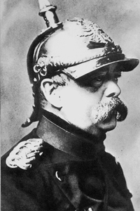

Lezione 16  L'Unità d'Italia
L'Unità d'Italia

-
360
330
-
235
400
-
310
300
-
322
320
-
380
350
-
ROMA
La breccia di Porta Pia dipinta con un'esattezza quasi fotografica dal pittore fiorentino Carlo Ademollo: l'esercito regio irrompe attraverso i fumi dell'artiglieria, mettendo in fuga le sconfitte truppe papaline.
-

PRUSSIA
Un celebre ritratto fotografico del cancelliere prussiano Otto von Bismarck.
BEZZECCA
Garibaldi trionfa alla battaglia di Bezzecca in un dipinto del pittore di Palestrina Felice Zennaro. VENETO
La Terza guerra di indipendenza italiana si inserisce nel contesto più ampio della guerra austro-prussiana del 1866. L'esercito italiano ottiene scarsi risultati contro l'Austria: solo i Cacciatori delle Alpi guidati da Garibaldi riportano una vittoria nei pressi di Trento. Quando l'Austria capitola a Sadowa, sconfitta dalla Prussia, deve cedere il Veneto all'Italia.ROMA
L'esercito francese di Napoleone III proteggeva Roma dagli attacchi dell'esercito italiano. Quando però scoppia la guerra franco-prussiana, i francesi devono ritirare le truppe. A quel punto i bersaglieri italiani entrano a Roma dalla breccia di Porta Pia, e occupano la città il 20 settembre 1870.